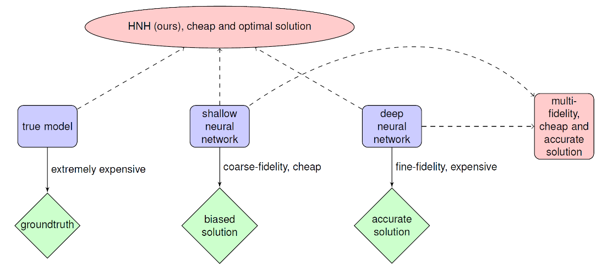

<!DOCTYPE html PUBLIC "-//W3C//DTD XHTML 1.1//EN"
  "http://www.w3.org/TR/xhtml11/DTD/xhtml11.dtd">
<html xmlns="http://www.w3.org/1999/xhtml" xml:lang="en">
<head>
<meta name="generator" content="jemdoc, see http://jemdoc.jaboc.net/" />
<meta http-equiv="Content-Type" content="text/html;charset=utf-8" />
<link rel="stylesheet" href="jemdoc.css" type="text/css" />
<title>Projects</title>
</head>
<body>
<table summary="Table for page layout." id="tlayout">
<tr valign="top">
<td id="layout-menu">
<div class="menu-category">menu</div>
<div class="menu-item"><a href="index.html">Home</a></div>
<div class="menu-item"><a href="projects.html" class="current">Projects</a></div>
<div class="menu-item"><a href="awards.html">Honors&nbsp;and&nbsp;Awards</a></div>
<div class="menu-item"><a href="activities.html">Activities</a></div>
<div class="menu-item"><a href="teaching.html">Teaching</a></div>
<div class="menu-item"><a href="miscellaneous.html">Miscellaneous</a></div>
</td>
<td id="layout-content">
<div id="toptitle">
<h1>Research</h1>
</div>
<h2>Projects</h2>
<h3>Tensor recovery</h3>
<table class="imgtable"><tr><td>
&nbsp;</td>
<td align="left"><p>This work proposes a systematic model reduction approach based on rank adaptive tensor recovery for partial differential equation (PDE) models with high-dimensional random parameters. Since the standard outputs of interest of these models are discrete solutions on given physical grids which are high-dimensional, we use kernel principal component analysis to construct stochastic collocation approximations in reduced dimensional spaces of the outputs. To address the issue of high-dimensional random inputs, we develop a new efficient rank adaptive tensor recovery approach to compute the collocation coefficients. 
Novel  efficient initialization strategies for non-convex optimization problems involved in tensor recovery are also developed in this work. </p>
</td></tr>
<tr><td ></td>
<td></td>
</tr>
</table>
<h3>Tensor train random projection</h3>
<table class="imgtable"><tr><td>
&nbsp;</td>
<td align="left"><p>This work proposes a novel tensor train random projection (TTRP) method for dimension reduction, where pairwise distances
can be approximately preserved. Based on a tensor train format, this new random projection method can  speed up the computation for high dimensional problems 
and requires less storage with little loss in accuracy, compared with existing methods (e.g., very sparse random projection). Our TTRP is systematically constructed through a rank-one TT-format matrix with Rademacher random variables, which results in efficient projection with small variances. </p>
</td></tr>
<tr><td ></td>
<td></td>
</tr>
</table>
<h3>Failure probability estimation</h3>
<table class="imgtable"><tr><td>
&nbsp;</td>
<td align="left"><p>Failure probability evaluation for complex physical and engineering systems governed by partial differential equations (PDEs) are computationally intensive, especially when high-dimensional random parameters are involved. Since standard numerical schemes for solving these complex PDEs are  expensive, traditional Monte Carlo methods which require repeatedly solving PDEs are infeasible. Alternative approaches which are typically the surrogate based methods suffer from the so-called curse of dimensionality, which limits their application to problems with high-dimensional parameters. For this purpose, we  develop a novel hierarchical neural hybrid (HNH) method to efficiently compute failure probabilities of these challenging high-dimensional problems. Especially,  multifidelity surrogates are constructed based on neural networks with different levels of layers, such that expensive highfidelity surrogates are adapted only when the parameters are in the suspicious domain. The efficiency of our new HNH method is theoretically analyzed and is demonstrated with numerical experiments. From numerical results, we show that to achieve an accuracy in estimating the rare failure probability (e.g.,10−5), the traditional Monte Carlo method needs to  solve PDEs more than a million times, while our HNH only requires solving them a few thousand times.</p>
</td></tr>
<tr><td ></td>
<td></td>
</table>
<h3>KRnet and its applications</h3>
<table class="imgtable"><tr><td>
&nbsp;</td>
<td align="left"><p>In this work, we develop an invertible transport map, called KRnet, for density estimation by coupling the Knothe-Rosenblatt (KR) rearrangement and the flow-based generative model, which generalizes the real NVP model. The triangular structure of the KR rearrangement breaks the symmetry of the real NVP in terms of the exchange of information between dimensions, which not only accelerates the training process but also improves the accuracy significantly. We use KRnet as a PDF model to approximate the Fokker-Planck equation to alleviate the difficulties from the curse of dimensionality. Difficulties caused by the boundary conditions and the nonnegativity of PDF have disappeared since KRnet is a family of probability density functions. To result in effective stochastic
collocation points for training KRnet, we develop an adaptive sampling procedure, where samples are generated iteratively using KRnet at each iteration.</p>
</td></tr>
<tr><td ></td>
<td></td>
</table>
<h3>DAS: A deep adaptive sampling method for solving partial differential equations</h3>
<table class="imgtable"><tr><td>
&nbsp;</td>
<td align="left"><p>In this work we propose a deep adaptive sampling (DAS) method for solving partial differential equations (PDEs), where deep neural networks are utilized to approximate the solutions of PDEs and deep generative models are employed to generate new collocation points that refine the training set. The overall procedure of DAS consists of two components: solving the PDEs by minimizing the residual loss on the collocation points in the training set and generating a new training set to further improve the accuracy of current approximate solution. In particular, we treat the residual as a probability density function and approximate it with a deep generative model, called KRnet. The new samples from KRnet are consistent with the distribution induced by the residual, i.e., more samples are located in the region of large residual and less samples are located in the region of small residual. Analogous to classical adaptive methods such as the adaptive finite element, KRnet acts as an error indicator that guides the refinement of the training set. Compared to the neural network approximation obtained with uniformly distributed collocation points, the developed algorithms can significantly improve the accuracy, especially for low regularity and high-dimensional problems. We present a theoretical analysis to show that the proposed DAS method can reduce the error bound and demonstrate its effectiveness with numerical experiments.</p>
</td></tr>
<tr><td ></td>
<td></td>
</table>
<h2>Talks</h2>
<p>Workshop at Peng Cheng Laboratory: AI for computing, Shenzhen, China, July 2021 - Adaptive deep density approximation for Fokker-Planck equations <a href="doc/KR_adda.pdf">[Slides]</a><br /></p>
<p>SIAM CSE 2019, Spokane, Washington, February 2019 - Rank adaptive tensor recovery based model reduction for partial differential equation with high-dimensional random inputs <a href="https://meetings.siam.org/sess/dsp_programsess.cfm?SESSIONCODE=65894">[Link]</a><br /></p>
<p>CSIAM 2018, Chengdu, China, September 2018 - Tensor recovery for PDEs with high-dimensional random inputs <a href="http://ddl.escience.cn/f/QULZ">[Link]</a><br /></p>
</td>
</tr>
</table>
</body>
</html>
